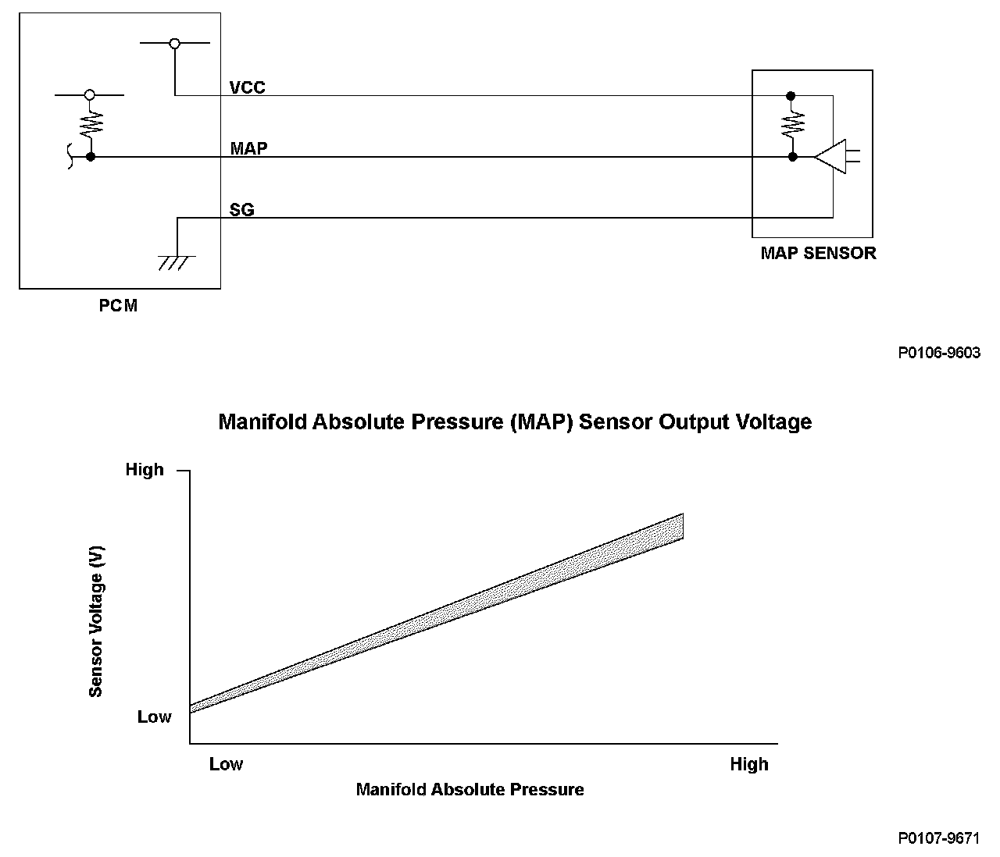
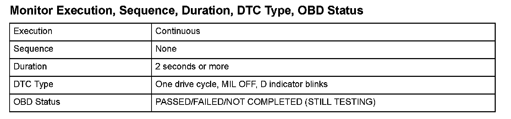
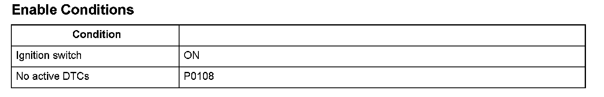

Manifold Absolute Pressure (MAP) Sensor Circuit Low Voltage Input
DTC P0107: Manifold Absolute Pressure (MAP) Sensor Circuit Low Voltage Input
General Description
The manifold absolute pressure (MAP) sensor senses manifold absolute pressure (vacuum) and converts it into electrical signals. The MAP sensor outputs low signal voltage at high-vacuum (throttle valve closed) and high signal voltage at low-vacuum (throttle valve wide open).
If a signal voltage from the MAP sensor is a set value or less, the powertrain control module (PCM) detects a malfunction and a DTC is stored.

Monitor Execution, Sequence, Duration, DTC Type, OBD Status

Enable Conditions
Malfunction Threshold
The MAP sensor output voltage is 0.23 V or less for at least 2 seconds.
Diagnosis Details
Conditions for illuminating the indicator
When a malfunction is detected, the D indicator blinks, and the DTC and the freeze frame data are stored in the PCM memory. The MIL does not come on.
Conditions for clearing the DTC
The DTC and the freeze frame data can be cleared by using the scan tool Clear command or by disconnecting the battery.